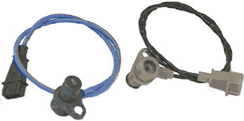

главная → ЭСУД ГАЗ
Датчик положения коленчатого вала (датчик частоты) 23.3847 (РФ)
Назначение датчика. Принцип действия
- Датчик положения коленчатого вала двигателя предназначен для синхронизации электронного управления электромеханизмами двигателя с работой его механизма газораспределения, и обеспечивают формирование импульсных сигналов для циклового, тактного и углового управления впрыском топлива и зажиганием двигателя.
- Датчик положения коленчатого вала, работает в паре с диском синхронизации (синхродиском) и обеспечивает выдачу угловых импульсов синхронизации от (60–2) зубьев диска, то есть размечает оборот коленчатого вала на угловые отметки. Угловая длительность одного зуба, включая интервал до следующего, составляет 6 градусов положения коленвала.
- Синхродиск имеет вырез размером в два полных зуба. Начало 20-го (после выреза) зуба синхродиска совпадает с верхней мертвой точкой первого или четвертого цилиндров.
- Отказ датчика положения коленчатого вала приводит к полному отказу системы управления двигателем.
- Чувствительный элемент датчика включает намагниченный сердечник и обмотку из медного провода на изолированной катушке.
- Принцип работы датчика заключается в наведении ЭДС переменного тока синусоидальной формы в обмотке при прохождении стального зубца синхродиска мимо торца датчика. В центре зуба (его задний срез) нулевая амплитуда сигнала датчика—фаза изменения полярности сигнала.
Конструкция датчика

- Конструктивно датчик состоит из следующих элементов:
- цилиндрический пластмассовый или алюминиевый корпус с чувствительным элементом;
- основание датчика с фланцем и отверстием крепления;
- кабель связи в экранированный оболочке длиной 610 мм;
- трехконтактная вилка соединителя, опрессованная на кабеле.
Параметры датчика
- Сопpотивление обмотки датчика между выводами 2—1: 880... 900 Ом.
- Минимальная амплитуда переменного напряжения сигнала (выводы 2—1) при частоте вращения синхродиска 20 об/мин (20 Гц), зазоре между сердечником и синхродиском 1,5мм и сопротивлении нагрузки 10кОм: не менее 0,2В.
- Максимальная амплитуда переменного напряжения сигнала (выводы 2—1) при частоте вращения синхродиска 6000 об/мин (6000 Гц), зазоре между сердечником и синхродиском 0,5мм и сопротивлении нагрузки 100кОм: не более 250В.
Установка и монтаж датчика на автомобиле
- Датчик положения коленчатого вала устанавливается на двигателе спереди рядом с зубчатым диском синхронизации:
- ЗМЗ-4062.10, ЗМЗ-409.10, ЗМЗ-405.10—в приливе передней крышки цепи распредвала;
- УМЗ-4213.10, УМЗ-420.10—на приливе крышки шестерни распределительного вала двигателя.
- Датчик крепится болтом М6х12.
- Монтажный зазор, измеренный между торцом датчика и верхней кромкой
зуба синхродиска, должен быть в пределах 0,5...1,2 мм. Монтажный зазор не регулируется и обеспечивается при установке датчика на заводе-изготовителе двигателя.
- Подключение датчика к жгуту проводов производится с помощью трехконтактной розетки с защелкой.
- Датчик имеет полярность по схеме включения, то есть обратное включение датчика равносильно его неисправности.
- Сигнальные провода датчика («Плюс» и «Минус»), с целью защиты сигнала от помех бортовой сети, должны быть парно свиты и помещены в экранированую оболочку.
Аналоги датчика
- Аналоги датчика положения коленчатого вала 23.3847 (г. Калуга):
- датчик синхронизации DG-6 0261210113 (BOSCH);
- датчик синхронизации ДС-1 406.3847060-01 (г. Кастрома).
- Конструктивные отличия датчиков:
- у отечественных датчиков выход кабеля повернут на 90 градусов по отношению к оси крепежного отверстия датчика.
- у импортного аналога DG-6 выход кабеля направлен в противоположную от крепежного отверстия сторону.
Внешние проявления неисправностей цепей датчика

- Неустойчивые обороты холостого хода горячего двигателя. Лампа неисправности бессистемно загорается при работающем двигателе. Самодиагностика блока фиксирует код неисправности 53.
- проверьте монтажный зазор между торцом датчика и синхродиском;
- устраните возможные торцевые биения синхродиска;
- замените датчик на заведомо исправный;
- проверьте контакт экранирующей оболочки с массой двигателя;
- проверьте и устраните неисправности высоковольтных проводов системы зажигания.
- Двигатель не запускается (или запускается и глохнет). Самодиагностика блока фиксирует код неисправности 53. Проверьте:
- возможную перекоммутацию и исправность цепей 48 и 49;
- монтажный зазор между торцом датчика и синхродиском.
- Двигатель не запускается («не схватывает»). Самодиагностика блока не фиксирует коды неисправностей. Если частота вращения коленвала равна «0» («нулю») в режиме продувки цилиндров воздухом (стартерная прокрутка двигателя при полном дросселе), проверьте:
- подключение датчика к жгуту проводов;
- наличие одновременной неисправности цепей 48 и 49;
- исправность обмотки датчика—замените датчик.
|